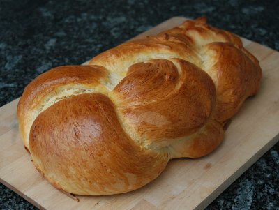

| Zutaten: | |
| 1 kg | Weissmehl |
| 1/2 El | Salz |
| 30 g | Hefe |
| 50-100 g | Zucker |
| 1 | Zitrone, Schale von |
| 150 g | Butter |
| ca 5dl | Milch |
| 1 | Ei |
Mehl in die Schüssel sieben, in der Mitte eine Mulde formen, das Salz über den Rand verteilen.
Die Hefe mit dem Zucker auflösen.
Die Butter in einem Pfännchen schmelzen und mit der Milch abkühlen.
Hefelösung und Milchbutter zum Mehl geben, vermischen und von Hand 10-15 Minuten kneten, bis der Teig elastisch und glatt ist und beim Durchschneiden kleine Luftlöcher aufweist.
Den Teig in die Schüssel zurückgeben und mit einem feuchten Tuch bedeckt an einem warmen Ort auf das Doppelte aufgehen lassen.
Den Zopf formen und auf ein Backblech legen und aufgehen lassen. Nach dem Aufgehen ca. 30 Minuten kühl stellen, mit verklopftem Ei bestreichen und im gut vorgeheizten Backofen ca. 30-40 Minuten backen.
K300 Kalender, 19.9.86
Ich bin nicht der grosse Bäcker aber wie man auf dem Foto sieht kam es recht gut. Der Zopf schmeckt leicht nach Hefe. Vielleicht etwas weniger Hefe zugeben oder mehr Zucker? Ich habe den Teig primär mit der Maschine gerührt, bis sie komisch zu riechen begann. Passabel aber noch nicht Bäckerei-Standard. RE 30.9.2009
@LINKBACK_TAG@ @WAKELOCK@